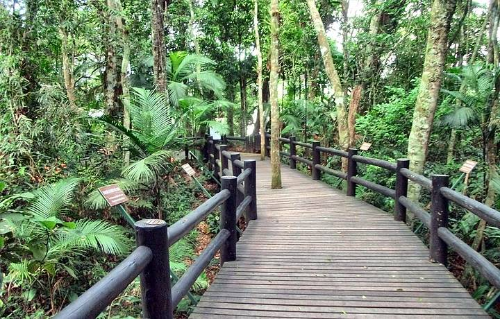

A cidade de São Paulo é cheia de surpresas, como o Horto Florestal, um importante parque de lazer e cultura localizado na zona norte da cidade de São Paulo.
Seus ecossistemas são o horto botânico e o arboreto. Além disso, conta com uma flora rica devido as áreas de proteção criadas pelo Poder Público, as chamadas Unidades de Conservação, nas quais destacam-se árvores das espécies pau-brasil, pau-ferro, carvalho-nacional e jatobá.
No local são encontrados animais como o macaco-prego, tucano, gambá, socó, garça, tico-tico, serelepe e martim pescador e diversos outros animais que estão ameaçados de extinção.
O Horto Florestal também se destaca por abrigar uma notável população de capivaras. É importante lembrar que não se pode oferecer alimentos a qualquer animal silvestre presente na região.
É possível fazer diversos passeios para entrar em contato com essa natureza. Alguns deles são: